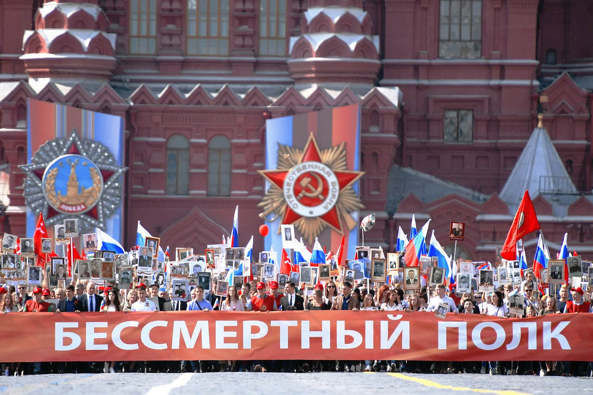

День Победы - 9 мая 1945 года
Мы помним! Мы гордимся!
До Дня Победы осталось:
00
дней
00
часов
00
минут
00
секунд
Бессмертный полк
"Бессмертный полк" - это международное общественное гражданско-патриотическое движение по сохранению личной памяти о поколении Великой Отечественной войны.
Участники движения ежегодно в День Победы проходят колонной по улицам городов с фотографиями своих родственников - ветеранов армии и флота, партизан, подпольщиков, бойцов Сопротивления, тружеников тыла, узников концлагерей, блокадников, детей войны.
Акция символизирует, что герои живут в памяти потомков, а их подвиг не будет забыт.

Почему важно помнить
Историческая память
Сохранение правды о Великой Отечественной войне и передача её будущим поколениям.
Связь поколений
Объединение людей разных возрастов общей памятью о подвиге предков.
Патриотизм
Воспитание любви к Родине и уважения к её истории.